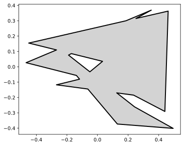
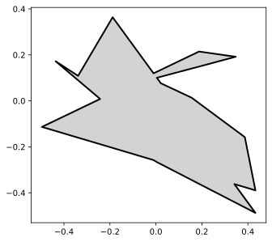
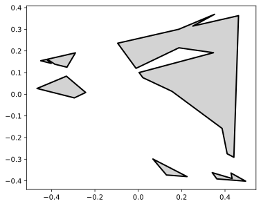
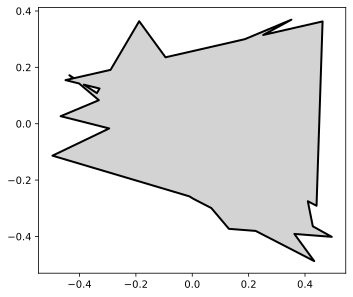
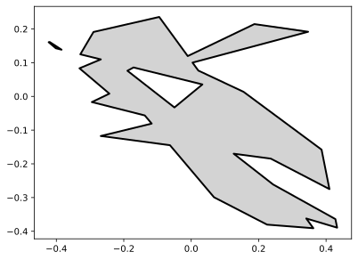
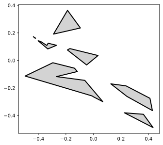
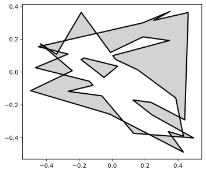

Polygon Set¶
[1]:
import skgeom as sg
[2]:
pset1 = sg.PolygonSet([sg.random_polygon(seed=100), sg.random_polygon(seed=300)])
pset1

[3]:
pset2 = sg.PolygonSet([sg.random_polygon(seed=3), sg.random_polygon(seed=8)])
pset2

[4]:
pset1.difference(pset2)

[5]:
pset1.union(pset2)

[6]:
pset1.intersection(pset2)

[7]:
pset3 = pset1.complement.intersection(pset2)
pset3

[8]:
len(pset3)
[8]:
7
[9]:
pset1.symmetric_difference(pset2)

[10]:
poly = pset3.locate(sg.Point2(-0.1, -0.3))
from skgeom.draw import draw
draw(pset3)
draw(poly, facecolor="red")